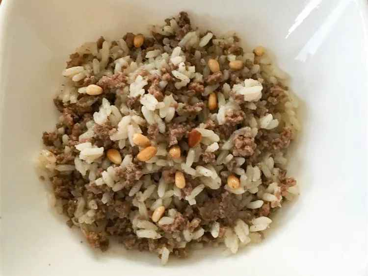

Syrian Rice with Meat

Description
A Syrian rice dish with spiced meat and pine nuts.
Prep Time: 5 mins
Cook Time: 30m ins
Total Time: 35 mins
Servings: 6
Ingredients
- 1/4 cup butter
- 2 pounds ground beef
- 2 teaspoons salt
- 1/2 teaspoon ground allspice
- 1/2 teaspoon ground cinnamon
- 1/2 teaspoon ground black pepper
- 4 1/2 cups chicken broth
- 2 cups long grain white rice
- 2 tablespoons butter
- 1/2 cup pine nuts
Steps to follow
- Heat 1/4 cup butter in a large saucepan over medium-high heat. Add ground beef and season with salt,
allspice, cinnamon, and black pepper. Cook and stir until beef is browned and crumbly, 7 to 10 minutes.
- Stir chicken broth and rice into beef in the saucepan; bring to a boil. Reduce heat to low, cover, and cook
until liquid is absorbed, about 20 minutes.
- Meanwhile, melt 2 tablespoons butter in a small skillet over medium heat. Cook and stir pine nuts in hot
butter until lightly browned, 3 to 5 minutes.
- Mix pine nuts into beef-rice mixture before serving.
Recipe Tips
You can use lamb instead of ground beef.
Nutrition Facts(per serving)
674 calories
36g Fat
52g Carbs
34g Protein